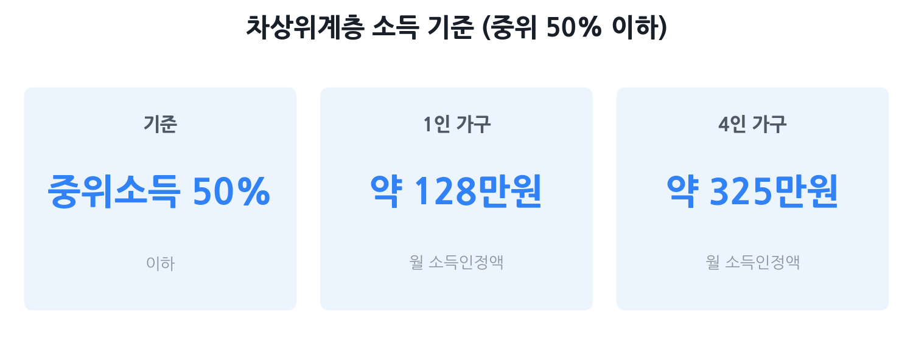

차상위계층 자격과 혜택 총정리 2026
— 내가 해당하는지, 받을 수 있는 게 뭔지 한 번에
기초생활수급 신청을 했다가 탈락했거나, "우리 집 형편이 어렵긴 한데 수급자는 아닌 것 같다"는 분들이 놓치는 제도가 있습니다. 바로 차상위계층입니다. 통신비 감면, 전기요금 할인, 문화누리카드, 의료비 경감까지 — 해당되면 연간 수십만 원에서 수백만 원의 실질 지원을 받을 수 있어요. 2026년 기준으로 자격부터 혜택까지 전부 정리했습니다.
- 기초수급 신청을 했다가 탈락했거나 신청을 망설이고 있는 저소득 가구
- "나도 차상위계층인가?" 자가진단이 필요한 분
- 차상위계층이 됐을 때 어떤 혜택을 받을 수 있는지 궁금한 분
- 기초수급자와 차상위계층이 어떻게 다른지 헷갈리는 분

차상위계층이란? — 정의와 핵심 개념
차상위계층(次上位階層)은 기초생활수급자 바로 위 계층, 즉 "수급자는 아니지만 소득이 낮아 생활이 어려운 가구"를 가리킵니다. 법적 정의는 소득인정액이 기준 중위소득의 50% 이하인 가구입니다(국민기초생활보장법 제2조 제10호).
여기서 핵심 단어가 두 가지입니다. 하나는 '소득인정액', 다른 하나는 '기준 중위소득'입니다.
- 기준 중위소득: 전체 가구를 소득 순서로 줄 세웠을 때 정확히 중간에 위치한 가구의 소득. 매년 보건복지부 고시로 발표됩니다. 2026년은 역대 최대 폭인 6.51% 인상됐어요.
- 소득인정액: 단순한 월급이 아닙니다. 소득평가액(실제소득 − 지출·공제)과 재산의 소득환산액(재산 − 기본재산액 − 부채 × 환산율)을 더한 값입니다. 즉 재산이 있어도 부채·공제를 빼기 때문에, 실제 소득이 없어도 집이 있으면 어느 정도 소득으로 환산됩니다.
2026년 가구원수별 소득 기준표
아래는 2026년 기준 중위소득 100%와 차상위계층 기준인 50%를 가구원수별로 정리한 표입니다. 소득인정액이 '중위소득 50%' 이하이면 차상위계층 자격을 가질 수 있습니다.
| 가구원수 | 중위소득 100% (월) | 차상위 기준 50% (월) |
|---|---|---|
| 1인 | 2,564,238원 | 1,282,119원 |
| 2인 | 4,199,292원 | 2,099,646원 |
| 3인 | 5,359,036원 | 2,679,518원 |
| 4인 | 6,494,738원 | 3,247,369원 |
| 5인 | 7,556,720원 | 3,778,360원 |
| 6인 | 8,555,952원 | 4,277,976원 |
| 7인 | 9,515,150원 | 4,757,575원 |
출처: 보건복지부 2026년 기준 중위소득 고시(2025년 발표). 8인 이상은 7인 기준에서 1인당 959,198원씩 추가합니다.
차상위 4가지 유형 — 어떻게 나뉘나
차상위계층은 하나의 '등록증'으로 모든 혜택을 받는 구조가 아닙니다. 크게 4가지 유형으로 나뉘며, 각각 신청 경로와 혜택이 다릅니다.
| 유형 | 핵심 대상 | 주요 연계 혜택 |
|---|---|---|
| 차상위계층확인서 (일반 차상위) |
소득인정액 중위소득 50% 이하 가구 전반 | 통신비 감면, 문화누리카드, 전기·도시가스 할인, 양곡 할인, 평생교육바우처 등 |
| 차상위 자활 | 근로능력 있는 차상위 가구원 | 자활사업 참여, 자산형성지원(희망저축계좌) 연계 |
| 차상위 장애인 | 등록 장애인 중 차상위 가구 | 장애인 활동지원 본인부담 감면, 보조기기 지원 등 |
| 차상위 본인부담경감 | 건강보험 가입자 중 차상위 기준 해당자 | 외래·입원 의료비 본인부담 대폭 감면 |
기초생활수급자와 무엇이 다른가
가장 많이 헷갈리는 부분입니다. 차상위계층과 기초생활수급자는 같은 '저소득층 지원 제도'이지만 성격이 전혀 다릅니다.
| 구분 | 기초생활수급자 | 차상위계층 |
|---|---|---|
| 소득인정액 기준 | 생계급여 중위소득 30% 이하 의료급여 40% 이하 주거급여 47% 이하 교육급여 50% 이하 |
중위소득 50% 이하 |
| 급여 방식 | 생계비(현금), 의료급여, 주거급여, 교육급여 직접 지급 | 각종 요금 감면·바우처·사업 참여 등 간접 지원 |
| 부양의무자 기준 | 일부 급여에 적용 | 대부분 미적용 (유형별 상이) |
| 중복 여부 | 교육급여 수급자는 차상위계층 일부 혜택 동시 수령 가능 | 기초수급 자격이 생기면 차상위 자격 전환 |
쉽게 말해, 기초수급은 "직접 돈을 준다"는 개념이고, 차상위는 "쓸 때마다 깎아준다"는 개념에 가깝습니다. 지원 강도는 수급자가 훨씬 세지만, 수급자 기준을 충족하기 어려운 '중간 지대'에 있는 가구를 위한 안전망이 차상위계층 제도입니다.
받을 수 있는 혜택 총망라
차상위계층으로 확인되면 아래 지원들을 신청할 수 있습니다. 모두 자동으로 주어지는 것이 아니라 별도 신청이 필요한 항목이 대부분입니다.
| 분야 | 지원 내용 | 2026년 기준 금액/혜택 |
|---|---|---|
| 통신비 | 이동통신 요금 감면 (SKT·KT·LG U+ 동일 적용) | 기본료 11,000원 면제 + 초과분 35% 할인, 월 최대 21,500원 감면 |
| 전기요금 | 한국전력 복지할인 | 주거·교육급여 수준: 월 10,000원 감면 (하절기 월 12,000원) |
| 도시가스 | 도시가스 요금 감면 | 차상위계층 감면 대상 포함 (금액은 지역·계절별 상이, 가스사 문의) |
| 문화누리카드 | 문화·여행·체육 활동비 바우처 | 1인당 연 15만 원 (+청소년 13~18세, 준고령 60~64세 1만 원 추가) |
| 양곡 할인 | 정부양곡(쌀) 할인 구매 | 시중가 대비 약 60% 할인, 1인당 월 10kg 한도 신청 가능 |
| 의료비 | 건강보험 본인부담 경감 (차상위 본인부담경감 별도 신청) | 만성질환·18세 미만: 외래 14%, 입원 14% (희귀·중증난치질환자는 더 낮음) |
| 교육비 | 교육비 지원 (초·중·고 방과후·돌봄 등) | 지자체·학교별 상이, 입학금·수업료 감면 및 방과후학교 자유수강권 등 |
| 평생교육바우처 | 성인 학습비 지원 | 1인 연 35만 원 (한국장학재단 신청, 예산 소진 시 마감) |
| 자산형성 지원 | 희망저축계좌 I·II (자활 연계 시) | 본인 저축액에 정부 매칭 지원 (유형·기간에 따라 상이) |
| 가사·간병 방문지원 | 일상생활 어려운 차상위 가구 방문 서비스 | 월 24~27시간(등급별 상이), 본인 부담 없음 또는 소액 |
함정과 자가진단 포인트
실수하기 쉬운 4가지 함정
- ① 소득이 없어도 재산 때문에 탈락. 소득인정액에는 재산이 포함됩니다. 부모님 명의 주택에 거주하거나 금융재산이 많다면 소득이 없어도 기준을 초과할 수 있습니다. 하지만 반대로, 재산이 있어도 기본재산 공제와 부채 차감을 받으면 환산 소득이 크게 줄 수 있으니 직접 계산해 보지 않고 포기하지 마세요.
- ② 자격별로 따로 신청해야 한다. 차상위계층확인서를 받았다고 해서 의료비 본인부담 경감이 자동 적용되지 않습니다. 유형마다 별도 신청이 필요합니다.
- ③ 혜택을 몰라서 못 받는다. 통신비 감면은 통신사 영업점·고객센터에 직접 신청해야 적용됩니다. 차상위 자격을 얻은 뒤 아무것도 하지 않으면 혜택을 하나도 못 받을 수 있습니다.
- ④ 부양의무자 기준 오해. 차상위계층은 대부분 부양의무자 기준을 보지 않습니다. 기초수급에서 "자녀 소득 때문에 탈락"했더라도 차상위는 해당될 수 있습니다.
자가진단 5단계 체크리스트
- 가구원수를 확인하고 위 기준표의 '중위소득 50%' 금액을 찾는다.
- 월 소득(실수령액 기준이 아니라 세전 소득이나 사업소득 등 합산)을 파악한다.
- 재산(부동산·금융재산·차량 등)을 파악하고, 지역별 기본재산액과 부채를 빼 소득 환산값을 어림해 본다.
- 소득평가액 + 재산 환산 소득이 기준 금액 이하이면 신청 가능성이 있다.
- 복지로(www.bokjiro.go.kr) → '복지서비스 모의계산' → '기초생활보장'으로 소득인정액을 직접 계산해 본다.
신청 방법 — 주민센터·복지로
차상위계층 신청은 두 가지 경로 중 하나를 선택할 수 있습니다.
방법 1 — 주민센터 방문 신청 (권장)
- 거주지 읍·면·동 행정복지센터(주민센터)를 방문한다.
- 신분증을 지참하고 '차상위계층 확인 신청' 또는 해당 유형 신청 의사를 밝힌다.
- 담당자가 필요 서류(건강보험료 납부확인서, 재산 증빙 등)를 안내해 준다.
- 심사 후 결과 통보 (보통 30일 이내).
방법 2 — 복지로 온라인 신청
- 복지로(www.bokjiro.go.kr) 접속 → 로그인(공동인증서 등).
- '서비스 신청' → '복지급여 신청' → 해당 유형 선택.
- 전자서명 후 제출. 추가 서류가 필요한 경우 주민센터에서 연락이 옵니다.
차상위 자격 확인 후에는 각 혜택별로 추가 신청이 필요합니다. 예를 들어 통신비 감면은 통신사 고객센터나 지점에 차상위계층확인서를 지참해 직접 신청해야 합니다. 문화누리카드는 복지로 또는 우체국·농협에서 발급받을 수 있습니다.
자주 묻는 질문
Q. 차상위계층이 되면 기초생활수급자와 똑같은 혜택을 받나요?
아닙니다. 기초생활수급자는 생계·의료·주거·교육급여 등 현금·현물을 직접 받지만, 차상위계층은 통신비 감면, 전기요금 할인, 문화누리카드, 의료비 경감 등 간접 지원 위주입니다. 혜택의 강도는 수급자보다 약하지만, 아예 없는 것과는 크게 다릅니다.
Q. 소득은 낮은데 부모님 집이 있어서 재산이 있습니다. 차상위계층이 될 수 있나요?
가능할 수 있습니다. 소득인정액은 소득과 재산을 합산하지만, 재산에는 기본재산액 공제와 부채 차감이 적용됩니다. 재산이 있다고 무조건 탈락하지는 않으니, 주민센터 방문 상담이나 복지로 모의계산을 먼저 해 보세요.
Q. 차상위계층 신청은 어디서 하나요?
거주지 읍·면·동 행정복지센터(주민센터)를 방문하거나, 복지로(www.bokjiro.go.kr)에서 온라인으로 신청할 수 있습니다. 처음 신청이라면 주민센터 방문을 권장합니다. 담당 공무원이 필요 서류와 신청 가능한 유형을 함께 안내해 줍니다.
Q. 차상위계층확인서와 차상위 본인부담경감은 별도로 신청해야 하나요?
네, 별도입니다. 차상위계층은 크게 ①차상위계층확인서 발급, ②차상위 자활, ③차상위 장애인, ④차상위 본인부담경감의 네 가지 유형으로 나뉩니다. 의료비 경감을 받으려면 본인부담경감을 따로 신청해야 하며, 유형마다 세부 요건이 다를 수 있습니다.
Q. 기초수급 탈락 통보를 받았는데 차상위계층으로는 될 수 있나요?
가능합니다. 탈락 사유가 소득인정액이 중위소득 30~50% 사이였거나 부양의무자 기준 때문이었다면, 차상위계층 자격에는 해당할 수 있습니다. 차상위계층은 부양의무자 기준을 적용하지 않는 경우가 많아, 기초수급보다 진입 문턱이 낮습니다.
본 글은 보건복지부 2026년 기준 중위소득 고시, 복지로(bokjiro.go.kr), 건강보험심사평가원(hira.or.kr), 한국전력공사, 문화누리카드(mnuri.kr), 방송통신위원회 공개 자료를 기반으로 2026년 6월 7일 기준 작성됐습니다. 도시가스 감면 금액, 의료비 본인부담률 세부 항목 등은 지자체·사업자·유형별로 다를 수 있으며, 지원 기준과 예산은 변동될 수 있습니다. 본 페이지는 정보 제공 목적이며, 자격 여부는 담당 기관(주민센터, 복지로, 보건복지상담센터 129)에서 반드시 공식 확인하시기 바랍니다.